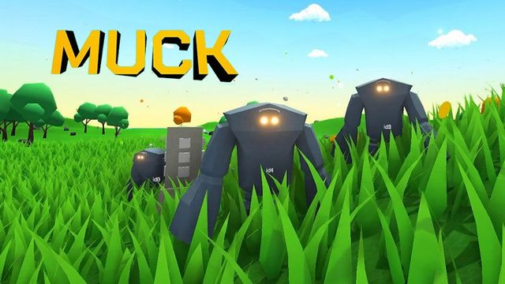

Muck
Rövid Ismertető
Muck egy építkezési és túlélőjáték, amelyet a Dani készített. Ez az indie játék a túlélésre és az erőforrások gyűjtésére helyezi a hangsúlyt egy procedurálisan generált világban. A Muck-ban a játékosok egy szigeten találják magukat, ahol számos kihívással kell szembenézniük. A játékosoknak meg kell találniuk az ételt és az erőforrásokat, építményeket kell létrehozniuk és fejleszteniük kell a karakterüket a túlélés érdekében. Az erőforrások gyűjtése és az építkezés kulcsfontosságú a Muck-ban. A játékosoknak bányászniuk kell az ásványi anyagokat, faanyagot kell gyűjteniük, és más természeti erőforrásokat kell megszerezniük. Ezeket az erőforrásokat felhasználva építményeket hozhatnak létre, mint például otthonokat, fegyvereket, védelmi szerkezeteket és egyéb hasznos eszközöket. A játékban a karakterek fejlődése is fontos szerepet játszik. A játékosok képességeket és felszereléseket szerezhetnek, amelyek növelik az erejüket és segítenek a szigeten fennmaradásban. A karakterfejlődés lehetőséget ad a játékosoknak, hogy testre szabják a játékstílusukhoz legjobban illő stratégiát. Muck egy izgalmas és kihívást jelentő játék, ahol a játékosok folyamatosan küzdenek a túlélésért a dinamikus világban. A procedurálisan generált térképek változatosságot és új kalandokat kínálnak minden játékmenetben. Az építési lehetőségek és a karakterfejlődés lehetővé teszik a játékosoknak, hogy saját túlélési stratégiájukat alakítsák ki és hozzanak létre egyedi építményeket. Összességében a Muck egy élvezetes és izgalmas játékélményt nyújt, amelyben a játékosoknak kreativitásra és stratégiai gondolkodásra van szükségük a túlélés érdekében.
Játékmenet
A Muck-ban a játék célja megjavítani a hajódat (mivel a történet szerint hajótörést szenvedtél) és legyőzni Bobot a sárkányt. A játékmenet a bossfightra való felkészülésből és a hajó javításához szükséges anyagok összeszedéséből áll. Folyamatosan fejlesztened kell a fegyvereidet, a páncélodat és az eszközeidet az éjszakánként egyre erősebb ellenségek és minibossok leküzdésére. A fegyverek és ezközök külömböző erősségűek attól függően hogy milyen anyagokból készülnek. A leggyengébb a fa amelyet a játék legeleén megszerezhető fából lehet elkészíteni. A fa után jönnek az Iron, a Gold, a Mithril, az Adamant, stb. szintek. Mindegyik szint fegyvereit és ezközeit csak olyan alapanyaagokból lehet elkészíteni amelyet az előző szint ezközeivel lehet megszerezni. A játékbvan fontos szerepet játszanak még a véletlenszerűen generálódó struktúrák mint például falvak, ládák, szobrok. A falvakban és elhagyatot házakban értékes anyagokat lehet találni a ládákban pedig power-upokat amelyek segítenek a játék során. A ládákat -az egyetlen ingyenes változat kivételével- csak az ellenségek által dobott aranypénz segítségével lehet kinyitni. Minél drágább egy láda kinyitása, annál valószínűbb, hogy értékesebb power-upok lesznek benne. A véletlenszerűen generálódó szobrok általában valamelyik minibossot idézik meg. A minibossok külömböző fegyvereket adnak, vagy a hajó megjavításához szükséges köveket. További szobrok vannak a csapattársaid felélesztésére vagy erős ellenfelek megidézésére. Nemcsak a külömböző nyersanyagok megszerzése lés minibossok llegyőzése jelent kihívást a Muckban hanem az éjszakák túlélése is. Minden éjszaka egyre több és egyre erősebb ellenfél támad meg, van esély egy-egy miniboss lespawnolására is.
Vélemények
Xx_KisPistaGamer2014Pro_xX
Letolt t em windos ikszpe anyukam gpere nem mukdik ralyta aszt mongya hogy nem tam og ata a gep nagyon szar eg csillag
Username
Nagyon jó nagyon szép. Ocsmány grafika, túl nehéz bossok, lopott assetek, Gusztustalan Unity default UI, játékmenet borzalmas. 10/10
KFCwatermelon
Biztos jó lenne a barátaimmal játszani ha lennének.